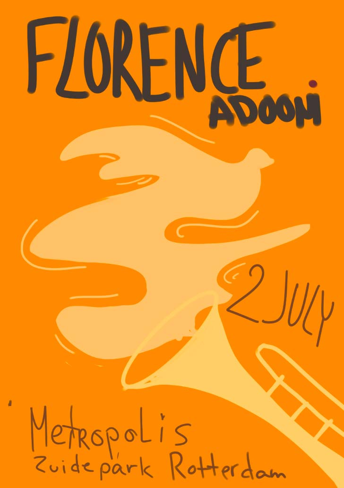
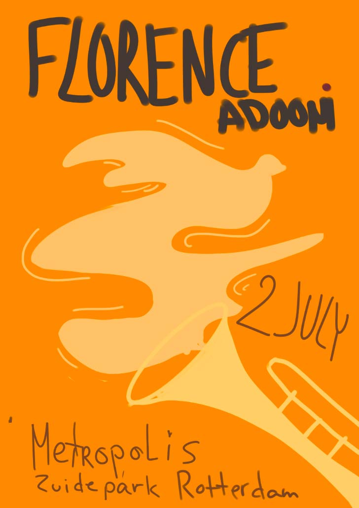

Creating a poster for the Metropolis festival, broadened my horizons and contributed to my understanding and implementation of the throrough research I conducted. The artwork reflects the cultural Ghanaian characteristics that the performer embodies, combined with the music style she performs. These elements are conveyed through the use of shapes and colors while still capturing the festival’s atmosphere in the design.
"Metropolis Festival" Poster
Research
Frafra Gospel originated in the churches of North-East Ghana, where people sing, dance, and clap during services.
Florence grew up in Kumasi, the center of Ghanaian highlife, blending it with her Frafra gospel style, which incorporates elements of pop, rock, and jazz, often featuring festive horns. Frafra Gospel music mixes traditional Frafra folk music with Christian themes, showcasing energetic rhythms and vibrant melodies. The lyrics are mostly in the Frafra language, with some English phrases, and the songs reflect the cultural values and daily lives of the Frafra people, celebrating faith, hope, and community.
After researching Florence and the genre, I began to explore the feelings and words that emerged while listening to her music. (shortened version)


 
